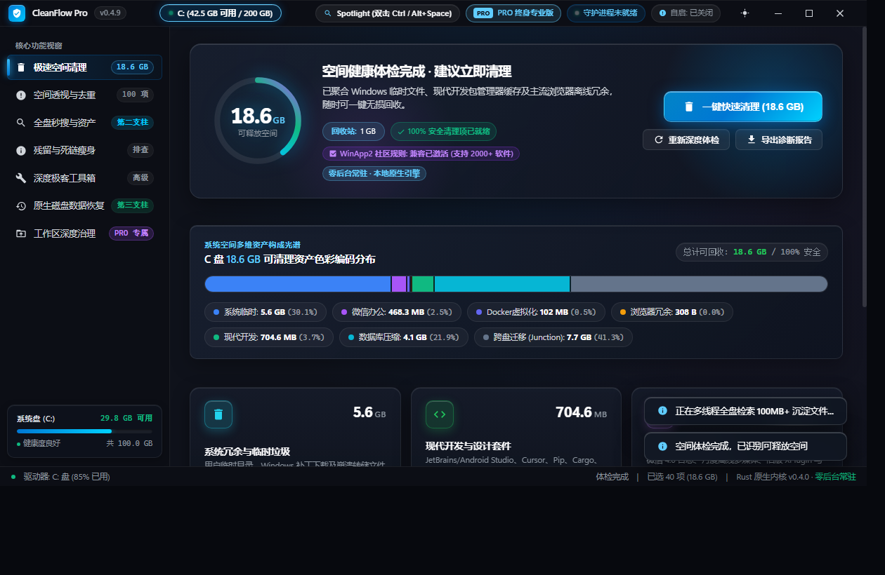
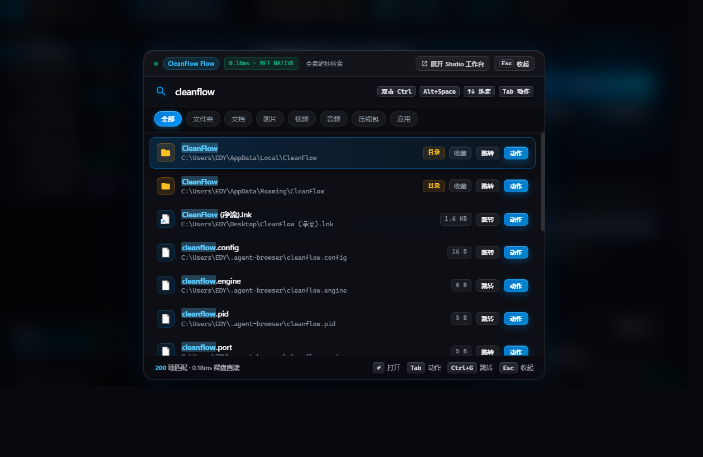
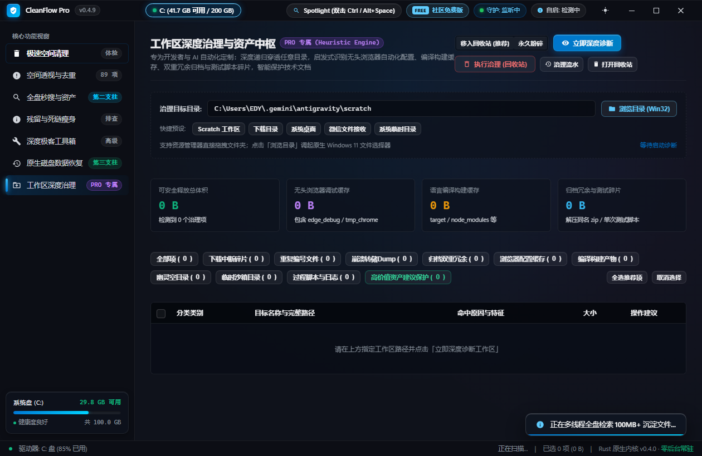

MFT 裸盘流式直读Bare-metal MFT Streaming
直接读取 NTFS 卷物理扇区，0.18ms 级全盘文件名检索。全盘数百万文件 1~3 秒完成拓扑重建，内存占用极低。Streams raw physical disk clusters directly, completing entire drive indexing in 1-3 seconds with zero memory bloat.
专为 Windows 10 与 11 打造的下一代工业级桌面资产中枢。NTFS MFT 裸盘秒级直读、微信/企微/QQ 深度瘦身、跨盘无损软搬迁、Space 键零解压预览与全天候智能自愈。 The next-generation Windows storage governance and instant search hub in pure Rust. Bare-metal NTFS MFT reading, WeChat/Office deep cleaner, lossless Junction migration, Space QuickLook preview and silent guard.
Windows 10 / 11（64 位）· 单文件 ~10.6 MB · 120/120 单元测试全绿 Windows 10 / 11 (64-bit) · Single binary ~10.6 MB · 120/120 Unit Tests Passing
试试看：在上方 Spotlight 搜索栏输入关键词、点击预设胶囊，或点击右侧动作按钮体验交互 Try it: Type in the Spotlight bar above, click query pills, or trigger action buttons
告别慢如蜗牛的 Win32 目录递归。直接流式解码磁盘 MFT 扇区簇链，百万文件毫秒内完成拼音混搜与容错匹配。 Bypass sluggish Win32 recursive tree walkers. Decode raw MFT clusters directly at wire speed, matching millions of files in milliseconds.
直接读取 NTFS 卷物理扇区，0.18ms 级全盘文件名检索。全盘数百万文件 1~3 秒完成拓扑重建，内存占用极低。Streams raw physical disk clusters directly, completing entire drive indexing in 1-3 seconds with zero memory bloat.
输入 4 字符以上容忍 1 处击键失误（输入 cagro 纠偏命中 cargo）。针对中文生态内置多音字与复合声母简拼索引。Tolerates 1 typo on queries over 4 chars (cagro finds cargo). Full pinyin initials and polyphone shadow indexing for Chinese.
在任何另存为或打开文件对话框中按下 Ctrl+G，瞬间将路径定位至资源管理器当前活动目录，彻底告别层层寻找。Press Ctrl+G inside any Open/Save dialog to instantly teleport to the active Explorer directory.
微信聊天记录、Ollama 本地大模型、Docker 虚拟磁盘占满 C 盘？一键搬迁至副盘并在原位创建透明 NTFS 目录联接 (Junction)，软件零感知照常运行，双向一键还原。 Relocate tens of gigabytes of WeChat data, Ollama models, or Docker containers to another volume. The original path remains an NTFS Reparse Point link with zero bytes allocated on C:.
Windows I/O 管理器底层重定向，IDE 与被搬迁软件完全无法感知物理变更。Transparently resolved by Windows I/O manager; apps continue unaware.
需要时一键解开 Junction 并迁回 C 盘，严格前置校验目标卷容量与锁死进程。Undo anytime with preflight volume capacity and process lock validation.
实时光谱条全景解析 C 盘结构。自由调整治理激进策略、启用免打扰感知，亲眼见证数十吉字节存储从容回归。 Inspect your drive horizon in real-time. Tune governance policies, activate gaming evasion, and witness tens of gigabytes restored instantly.



兼顾国民日常 C 盘瘦身与专业开发者生产力。每一个特性背后都是深入 Windows 内核机制的精心考量。 Engineered for both everyday Windows users and power developers, deeply rooted in native OS internals.
绕过缓慢的 Win32 API 递归，纯 Rust 直接解析 NTFS 磁盘主文件表扇区，全盘秒级索引。Decodes raw NTFS Master File Table sectors directly without sluggish Win32 recursion.
脱离盘符硬编码，自动解析注册表与配置定位微信 3.x/4.0 及企微目录；BLAKE3 识别重复接收附件，物理熔断保护聊天记录库。Auto-detects WeChat/WXWork/QQ across any drive via registry & config, deduplicates files while protecting chat DBs.
无损迁移数十 GB 微信、Ollama 模型或依赖目录至副盘，原路径保留透明软连接，软件与 IDE 零感知照常运行。Move giant folders to D: while preserving an NTFS Reparse Point link with zero bytes on C:.
选中任意结果按下空格键，即可流式预览代码文本或直接读取 ZIP/JAR 中央目录索引树，无需解压即可透视内部结构。Press Space on any hit to stream source code or inspect ZIP/JAR Central Directory entries without extraction.
动态加载系统自带 winsqlite3.dll 执行 VACUUM 与 WAL 截断，无损物理压缩 70% 数据库碎片空洞。Directly binds to Windows native winsqlite3.dll. Vacuum fragmentation with zero extra DLLs.
只读解析未分配 MFT 软删除记录与卷影副本 (VSS)，支持 Safetensors/GGUF/SQLite 魔数雕刻与非源盘安全导出。Read-only MFT undelete, VSS historical version recovery, and magic-byte file carving.
游戏或 PPT 放映时自动静默；基于 GetLastInputInfo 仅在离席超过 5 分钟后触发后台低压治理与云盘脱水。Silences notifications during fullscreen apps and triggers low-priority cleanup only when idle.
吸收 fsearch 算法，输入 4 字符容忍 1 处击键颠倒；内置多音字与复合声母影子索引，输入 jsq 秒搜计算器。1-Edit Damerau-Levenshtein typo correction with compound initials pinyin matching.
单一 10.6 MB Release 二进制，内嵌 Fluent Mica Web UI、SVG 与规则引擎，零外部依赖开箱即用。Single 10.6 MB binary with embedded Fluent Mica UI and zero external runtime dependencies.
磁盘目录包含个人资料、代码资产与聊天隐私。CleanFlow Pro 从架构第一天起就坚持 100% 纯本地运行。 Disks hold chats, source code, and private data. CleanFlow Pro is architected from day one to operate strictly on device.
所有 MFT 读取、索引生成与自愈规则全量在本地内存与 CPU 运算。All MFT parsing and healing rules execute locally on your own CPU and memory.
不含任何网络分析追踪代码，零后台回传，完全离线运行。No analytics, no network tracking, zero background telemetry pings.
单文件便携绿色，不向注册表写入流氓启动项，关闭即退出。Single portable executable. Leaves no garbage keys in Windows registry.
严格遵循无遥测规范，支持火绒/系统防火墙离线审计，安全清理可逆还原。Strict zero-telemetry architecture, fully verifiable via process monitors with instant Recycle Bin rollback.
这个页面同样不含任何第三方广告或统计追踪代码。This landing page contains zero tracking or external analytics scripts.
免费下载，绿色便携。核心功能完全免费，专业版畅享深度资产治理。Free to download, zero install. Free tier for daily cleaning, Pro for advanced governance.
下载 CleanFlow-Pro-v0.5.0-win64.zip，解压到任意目录（如 D:\Tools\CleanFlow）。Download CleanFlow-Pro ZIP and extract anywhere without installer setup.
双击 cleanflow.exe 即可运行；若需开机自启与开机服务，运行内置的 Install.cmd 即可。Launch cleanflow.exe directly, or run Install.cmd to register autostart.
cleanflow.exe在任意窗口按下 Alt + Space 或双击 Ctrl，即可呼出极速秒搜与全盘治理中枢。Press Alt+Space or double-tap Ctrl anywhere to invoke Spotlight and start.